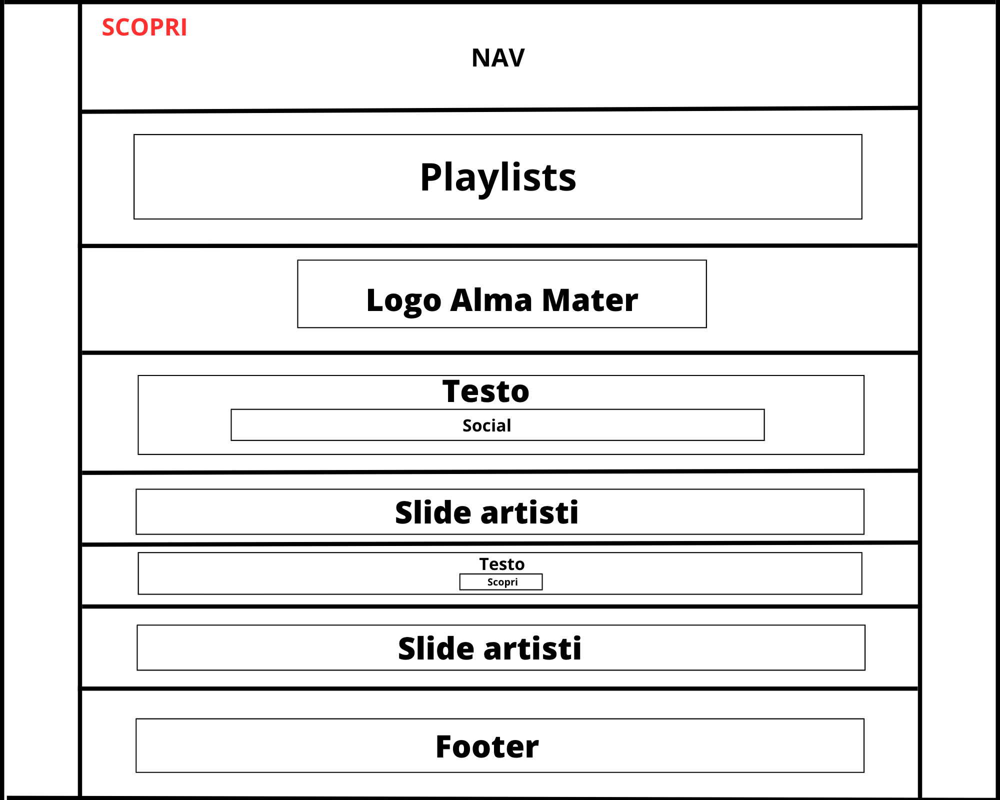

Project Manager Plan
ABSTRACT
Alma Music è un sito web di music sharing rivolto esclusivamente agli studenti dell'Alma Mater.
Alma Music permette ai musicisti, iscritti all'università, di caricare i propri canali musiciali, quali Spotify e/o SoundCloud.
La finalità del sito web è quella di dare la possibilità a chi fa musica di farsi conoscere e di farsi supportare, dai colleghi universitari, nel proprio percorso musicale.
Music for students by students.
BENCHMARKING
1. Obbiettivo
Alma Music si pone due obbiettivi:
1. Dare la possibilità di caricare i propri canali musicali
2. Permettere a tutti gli studenti appossionati di musica la scoperta di nuove canzoni e di nuovi artisti
2. Target
L'accesso ad Alma Music è consentito esclusivamente agli studenti che frequentano l'Alma Mater Studiorum.
Di conseguenza il sito è indirizzato ad un target giovanile, principalemte tra i 18 e i 25 anni
3. Competitors
Soundcloud:servizio musicale di music sharing
Spotify: servizio musicale per lo streaming
Last.fm: social network musicale
STRUTTURA E LAYOUT
1. Architettura del sito
Ho deciso di sviluppare l'architettura del sito su più pagine, per questo possiamo trovare: una home, una sezione scopri (nella quale verrano caricati i profili degli artisti iscritti alla piattaforma), una sezione about e una sezione upload (rivolta ai musicisti che vogliono caricare il proprio profilo). Nonostante tutte queste sezioni l'utilizzo del sito rimane facile e fluido, anche grazie ai vari collegamenti tra le pagine presenti in ogni sezione.
WIREFRAME

2. Look and feel
Dato che il sito è rivolto agli studenti dell'Alma Mater, ho deciso di mantenere lo stesso design e gli stessi colori presenti nella pagina web dell'università (www.unib.it).
L'unica sezione diversa per colori e per design è quella riservata agli artisti che si vogliono iscrivere alla piattaforma.
LINGUAGGI E STRUMENTI
1. Linguaggi
HTML
CSS
JavaScript
2. Strumenti
Google Font
Fontawesome
GitHub
Google Moduli
Spotify
SoundCloud
Canva
Visual Studio Code
Google Sheets
Communication Strategy
BACKGROUND
Alma Music è un sito web di music sharing rivolto esclusivamente agli studenti dell'Alma Mater Sudiorum.
Il sito web a cui mi sono ispirato maggiornamente per la realizzazione di Alma Music è stato SoundCloud.
A differenza di SoundCloud, Alma Music è rivolto ad un numero molto più ristretto di persone, vale a dire esclusivamente alla community universitaria.
Alma Music fa leva sulla forza della community. La finalità del sito web è quella di dare la possibilità ai vari musicisti iscritti all'Alma Mater di farsi conoscere e di farsi supportare dai colleghi universitari nel loro percorso musicale
Alma Music oltre ad appoggiarsi a SoundCloud per la condivisione delle traccie musicali, si appoggia anche su un'altra piattaforma di streaming musicale, ovvero Spotify.
OBIETTIVI COUNICATIVI
L'obiettivo che mi sono prefissato di raggiungere è quello di rendere il sito web funzionante. Oltre a questo mi ero stabilito l'iscrizione di almeno 5 persone alla newsletter.
TARGET AUDIENCE E MESSAGGIO
Dato che il sito è rivolto agli studenti dell'Alma Mater Studiorum, il target di Alma Music di aggira nella fascia d'età tra i 18 e i 25 anni.
Per raggiungere il mio target audience ho pensato di condividere il link del sito sui vari gruppi univerisitari di Whatsappe e Telegram.
PROMOZIONE
Il sito web è stato promosso da me e da alcuni miei amici nei vari gruppi Whatsapp e Telegram universitari.
VALUTAZIONE DEI RISULTATI
Gli obbiettivi prefissati sono stati raggiunti, infatti il sito è funzionante (è possibile caricare il proprio profilo grazie a un link collegato ad un form di google) e sono riuscito a superare le 5 iscrizioni alla newsletter, come testimonia la foto seguente: